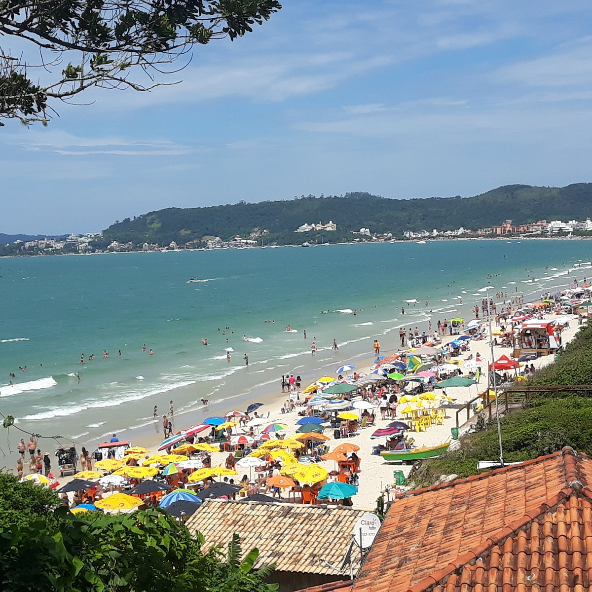

atualmente estou no 2º semestre e decidi ingressar na área pois desde pequeno sou apaixonado por computadores e tecnologia, . Atualmente faço parte do projeto Developer Academy na UCB, onde também estudo
| História de Paulo | ||
|---|---|---|
| Meu nome é Paulo Henrique Costa Alves, tenho 17 anos e decidi cursar engenharia de software pois sempre senti apego pela tecnologia e programação, desde pequeno tenho tido contato com o computador, desde jogos até vídeos simples, até que conforme fui amadurecendo comecei a pesquisar sobre a área de ti e me encaixei em engenharia de software, tenho treinado junto com o curso afim de me aperfeiçoar tanto em conteúdo como em pessoa, faço estudos constantes sobre a área e conteúdos diversos, também busco entrar na área e entrar na apple academy, um projeto da católica de ti em 2025 | ||
| Historia de Enrique | ||
| Meu nome é Enrique, tenho 19 anos e curso Engenharia de Software. atualmente estou no 2º semestre e decidi ingressar na área pois desde pequeno sou apaixonado por computadores e tecnologia, . Atualmente faço parte do projeto Developer Academy na UCB, onde também estudo |
||
| História de Gabriel | ||
| Meu nome é Gabriel Dani, tenho 18 anos e atualmente faço parte do curso de Engenharia de Software da Universidade Católica de Brasília no 1 semestre. Decidi seguir por este caminho por ter convivência com a tecnologia diariamente e acreditar que esta seja minha vocação, faço estudos revisionais em casa, e busco conhecimento para fazer parte do Projeto Developer Academy que terá inicio em 2025. |  | |
| História de Gustavo | ||
| Meu nome é Gsutavo Henrique Oliveira Da Silva e conheci e me apixonei pela area de TI e Engenharia de Sftware já dentro do ambiente academico, posso dizer depois de 4 semestres que é umas das melhores decisões que já tomei na vida e que espero seguir uma carrerira. | ||